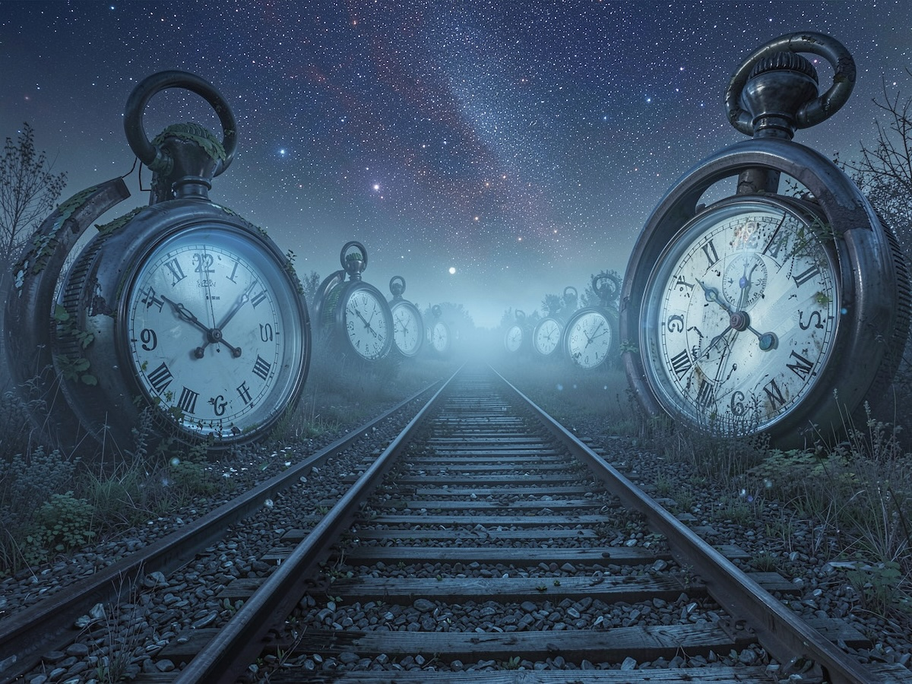

Rüyaların İçinde Zamanın Akışı: Gerçekten Daha Hızlı mı Yaşıyoruz?

Rüyalar, insan zihninin en gizemli ve en az anlaşılmış alanlarından biridir. Özellikle birçok kişinin merak ettiği şu soru oldukça dikkat çekicidir: Rüyada zaman gerçekten daha hızlı mı geçer, yoksa bu sadece bir algı yanılması mı? Bu yazıda, bilimsel araştırmalar, psikolojik yaklaşımlar ve deneysel veriler ışığında rüyalarda zaman algısını detaylı şekilde inceleyeceğiz.
Rüyalarda Zaman Algısı Nedir?
Günlük hayatta zaman, saatlerle ve fiziksel gerçeklikle ölçülür. Ancak rüya gördüğümüz sırada beynimiz dış dünyadan büyük ölçüde kopar. Bu durumda zaman algısı tamamen zihinsel bir deneyime dönüşür.
Rüyada birkaç saniye içinde uzun bir hikâye yaşadığımız hissine kapılmamızın nedeni tam olarak budur. Beyin, olayları lineer (doğrusal) bir zaman akışıyla değil, anlam ve duygu yoğunluğuna göre işler.
Bilim Ne Diyor? Rüyada Zaman Gerçekten Hızlı mı?
Yapılan bilimsel çalışmalar, rüyada zamanın düşündüğümüz kadar hızlı akmadığını gösteriyor.
Özellikle lucid rüya (bilinçli rüya) gören kişiler üzerinde yapılan deneylerde, deneklerden rüya sırasında belirli hareketleri yapmaları istenmiştir (örneğin 10 saniye saymak). Sonuçlar oldukça ilginçtir:
- Rüyada geçen süre ile gerçek dünyadaki süre neredeyse aynıdır
- Küçük sapmalar olsa da (birkaç saniye), dramatik bir hız farkı yoktur
Bu da şu anlama gelir:
Rüyada zaman aslında hızlanmaz, biz sadece öyle hissederiz.
Peki Neden Rüyalar Çok Uzunmuş Gibi Hissedilir?
Bu sorunun cevabı, beynin bilgi işleme biçiminde saklıdır.
1. Hikâye Sıkıştırma (Memory Compression)
Beyin, rüya sırasında olayları detaylı şekilde “yaşamak” yerine, bir nevi özet halinde işler. Uyanınca bu özetleri genişleterek hatırlarız.
Yani aslında:
- Rüyada saatler yaşamıyoruz
- Uyanınca beynimiz bunu saatler sürmüş gibi yeniden kurguluyor
2. Zaman Atlamaları (Time Skips)
Rüyalarda sahneler arasında ani geçişler olur:
- Çocuksun → bir anda yetişkinsin
- Evdesin → bir anda başka bir ülkedesin
Bu geçişler zamanın geçtiği hissini yaratır, ancak aradaki süreç gerçekte hiç yaşanmaz.
3. Duygusal Yoğunluk Etkisi
Rüyalar genellikle yoğun duygular içerir:
- Korku
- Heyecan
- Mutluluk
Gerçek hayatta da yoğun duygular zaman algısını değiştirir. Örneğin:
- Korktuğumuz anlar daha uzun sürmüş gibi gelir
- Eğlendiğimiz anlar hızlı geçer
Rüyada bu etki çok daha güçlüdür.
4. Mantık Dışı Zaman Kurgusu
Rüyalar fizik kurallarına bağlı değildir. Zaman:
- Geriye akabilir
- Aynı anda birden fazla olay yaşanabilir
- Kronolojik sıra tamamen bozulabilir
Bu durum, beynin zaman algısını gerçeklikten koparır.
REM Uykusu ve Zaman İlişkisi
Rüyaların büyük bölümü REM (Rapid Eye Movement) evresinde görülür. Bu evreyle ilgili önemli bilgiler:
- REM süresi genellikle 10–40 dakika arasındadır
- Gece ilerledikçe REM süresi uzar
- En canlı ve uzun rüyalar sabaha karşı görülür
Bu da şu anlama gelir:
Uzun gibi hissettiğimiz rüyalar aslında 20–30 dakikalık bir beyin aktivitesinin ürünüdür.
Lucid Rüyalar: Zamanı Test Etmenin En Net Yolu
Lucid rüya görebilen kişiler, rüyada olduklarının farkındadır. Bu durum bilim insanlarına zaman algısını ölçme fırsatı sunmuştur.
Deneylerde:
- Kişiler rüyada belirli süreleri sayar
- Göz hareketleriyle dış dünyaya sinyal gönderir
- EEG cihazları ile ölçüm yapılır
Sonuç:
Rüyadaki zaman ile gerçek zaman büyük ölçüde senkronizedir.
Rüyada Zaman Hızlanmaz, Algı Değişir
Tüm verileri toparladığımızda net bir sonuca ulaşıyoruz:
- Rüyada zaman fiziksel olarak hızlanmaz
- Beyin, olayları sıkıştırır ve yeniden yorumlar
- Duygular ve sahne geçişleri zamanın uzun sürdüğü hissini yaratır
Kısacası:
Rüyada zaman değil, zaman algımız değişir.
Rüyada Zamanı Daha Uzun Hissetmek Mümkün mü?
Evet, bazı tekniklerle rüyada zaman algısını genişletmek mümkündür:
- Lucid rüya pratiği yapmak
- Rüya günlüğü tutmak
- Uyku düzenini optimize etmek
- Gerçeklik kontrolleri uygulamak
Bu yöntemler, rüyaların daha net ve uzun hissedilmesini sağlar.